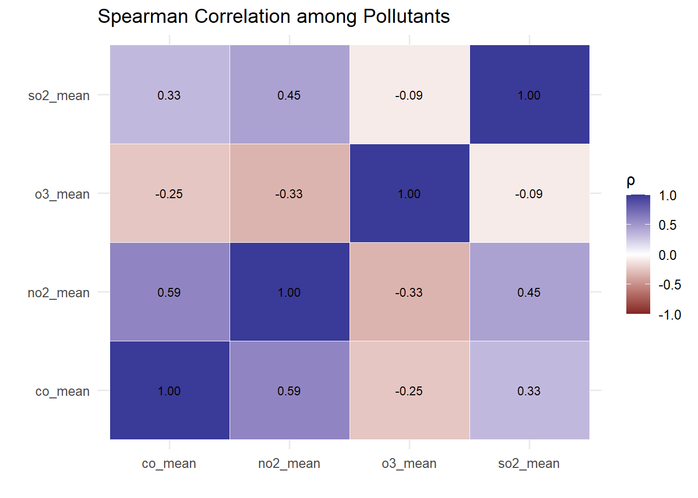

New names:
Rows: 665414 Columns: 22
── Column specification
──────────────────────────────────────────────────────── Delimiter: "," chr
(4): Address, State, County, City dbl (17): ...1, O3 Mean, O3 1st Max Value, O3
1st Max Hour, O3 AQI, CO Mean... date (1): Date
ℹ Use `spec()` to retrieve the full column specification for this data. ℹ
Specify the column types or set `show_col_types = FALSE` to quiet this message.
• `` -> `...1`
Welcome! Want to learn more? See two factoextra-related books at https://goo.gl/ve3WBa
pca_data <- state_pollutants %>%select(o3_mean, co_mean, so2_mean, no2_mean)pca <-PCA(pca_data, graph =FALSE)fviz_pca_biplot(pca,repel =TRUE,title ="PCA of State Pollution Profiles")
Warning: Using `size` aesthetic for lines was deprecated in ggplot2 3.4.0.
ℹ Please use `linewidth` instead.
ℹ The deprecated feature was likely used in the ggpubr package.
Please report the issue at <https://github.com/kassambara/ggpubr/issues>.
Mapping the PCA scores onto the U.S. map confirms that both principal components capture meaningful and geographically coherent air-quality patterns.
PC1 (“overall pollution burden”) is highest in the Northeast Corridor, the Great Lakes industrial region, and parts of the South—areas known for heavy traffic, dense population, and historic manufacturing activity. States such as Pennsylvania, Ohio, Illinois, New Jersey, and Tennessee show high PC1 scores on the map, aligning with their placement on the right side of the PCA biplot near the NO₂, CO, and SO₂ vectors. In contrast, Mountain West and northern Plains states—including Montana, Wyoming, Idaho, and Alaska—show very low PC1 values, consistent with their clean-air profiles and their location on the left side of the PCA plot.
PC2 (“pollution composition”) also aligns geographically. Western and high-elevation states such as Colorado, Utah, Arizona, and Nevada score high on PC2, reflecting their relatively ozone-dominated pollution pattern and their proximity to the O₃ vector in the PCA plot. Conversely, industrial and coal-dependent states—especially in the Rust Belt and parts of the Southeast—show lower PC2 scores, reflecting stronger contributions from SO₂ and NO₂.
Overall, the spatial distribution of PC1 and PC2 strongly supports the multivariate interpretation derived from the PCA biplot, demonstrating that the principal components capture physically meaningful regional differences in pollution levels and composition across U.S. states.
By pollutant types
Relationship
library(reshape2)
Attaching package: 'reshape2'
The following object is masked from 'package:tidyr':
smiths
corr_vars <- df_clean %>%select(o3_mean, co_mean, so2_mean, no2_mean)corr_mat <-cor(corr_vars, use ="pairwise.complete.obs",method ="spearman")corr_df <-as.data.frame(corr_mat) %>%rownames_to_column("var1") %>%pivot_longer(-var1, names_to ="var2", values_to ="corr")ggplot(corr_df, aes(x = var1, y = var2, fill = corr)) +geom_tile(color ="white") +scale_fill_gradient2(limits =c(-1, 1)) +geom_text(aes(label =sprintf("%.2f", corr)), size =3) +labs(title ="Spearman Correlation among Pollutants",x ="", y ="", fill ="ρ" ) +theme_minimal(base_size =12)

Monthly trend
# Line chart of monthly pollutantsmonthly_season <- df_clean %>%group_by(month) %>%summarise(o3_mean =mean(o3_mean, na.rm =TRUE),co_mean =mean(co_mean, na.rm =TRUE),so2_mean =mean(so2_mean, na.rm =TRUE),no2_mean =mean(no2_mean, na.rm =TRUE),.groups ="drop" ) %>%pivot_longer(cols =c(o3_mean, co_mean, so2_mean, no2_mean),names_to ="pollutant", values_to ="value") %>%mutate(pollutant =recode(pollutant,o3_mean ="O3",co_mean ="CO",so2_mean ="SO2",no2_mean ="NO2") )ggplot(monthly_season,aes(x = month, y = value, group = pollutant, color = pollutant)) +geom_line(linewidth =0.8) +geom_point(size =1.2) +labs(title ="Seasonal Pattern of Pollutants (Monthly Averages)",x ="Month", y ="Average Concentration",color ="Pollutant" ) +theme_minimal(base_size =12)
The seasonal component shows a highly consistent annual cycle: concentrations rise sharply in summer and fall in winter, and this pattern repeats almost perfectly across the entire 24-year period. This reflects the photochemical nature of ozone formation, which is strongly driven by sunlight intensity and temperature, making its seasonal cycle more pronounced than that of most other pollutants.
Second, the long-term trend in O3 does not show the same clear downward improvement seen in NO₂ or SO₂; instead, it shows a slight upward tendency.
The trend component indicates a gradual increase from 2000 to around 2008, a mostly flat period between 2008 and 2016, and a notable upward rise after 2016. This recent increase aligns with broader environmental conditions in the United States—such as hotter summers, more frequent extreme heat events, and widespread wildfires—that all contribute to elevated ozone levels. It also underscores that O₃ control is considerably more challenging compared with primary pollutants like NO₂ or SO₂.
Third, the remainder component does not display clear structural patterns, suggesting that the decomposition successfully captured the major features of the data.
Residual fluctuations center around zero and appear mostly random, with only a few spikes that may correspond to short-term extreme events.
Overall, the STL decomposition reveals that O3 dynamics are dominated by persistent seasonal cycles, its long-term trend has not shown meaningful improvement, and its recent upward movement deserves continued attention from both scientific and policy perspectives.
The ACF of daily O₃ shows extremely slow decay, with correlations above 0.8 for the first several dozen lags. This reflects strong persistence: ozone levels on a given day are highly dependent on conditions in recent days. The long tail of the ACF suggests substantial low-frequency structure, consistent with the strong seasonal cycle seen in the STL decomposition. Such long-memory behavior is typical of atmospheric pollution series influenced by meteorology.
Partial Autocorrelation (PACF)
The PACF displays a dominant spike at lag 1, indicating a strong AR(1) component. Several smaller but still significant spikes up to around lag 10–20 suggest mid-range autoregressive effects. Beyond approximately 50 lags, PACF values fall near zero, indicating that long-range dependence is indirect and primarily driven by the seasonal component rather than high-order autoregressive terms.
Interpretation
Together, the ACF and PACF patterns suggest that daily O₃ can be characterized by a combination of:
A strong short-term autoregressive structure;
A prominent seasonal cycle;
Long-memory behavior arising from atmospheric and climatological processes.
This confirms that O₃ is not a simple short-memory series, but rather a persistent, seasonally driven pollutant whose temporal dynamics reflect both meteorological forcing and photochemical processes.